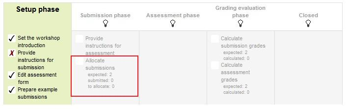

Selamat Datang di Mobile Learning Tutorial Workshop Activity Moodle, dalam Mobile Learning ini akan dijelaskan bagaimana cara membuat serta menggunakan
Moodle Activity Workshop
5. Setelah mengisi kriteria yang dibuat klik save and display Dalam rangka untuk
mengatur kriteria untuk tugas, guru perlu mengisi formulir penilaian selama fase
setup. (Jika Anda ingin siswa untuk dapat melihat formulir ini ketika mereka mengirimkan
maka Anda perlu menyertakan contoh pengajuan.) Pada tahap-tahap penilaian berikutnya,
siswa akan menilai pekerjaan rekan-rekan mereka 'berdasarkan bentuk penilaian ini.
Menurut Grading Strategy yang dipilih dalam pengaturan grading, guru akan mendapatkan
yang sesuai bentuk penilaian awal untuk mengedit dengan mengklik tombol 'Edit assessment
form' di halaman pertama dari setup Workshop untuk tugas. Grading Strategy dapat
menjadi salah satu penilaian Kumulatif, Komentar, Jumlah kesalahan atau Rubrik. Guru
dapat mengatur setiap kriteria secara rinci dalam bentuk penilaian.
6. Setelah workshop telah dibuat, kita kemudian dapat mengatur pengaturan yang berkaitan
dengan pengiriman. Hal ini dilakukan melalui mengklik menu yang disorot di bawah
yang ditemukan ketika Anda klik pada link workshop atau setelah mengklik "Save And
Display" pada penyelesaian Workshop. Untuk mengakses menu cukup klik pada "Allocate
Submissions". Hal ini disorot pada gambar dengan kotak merah.

Pengaturan Untuk GuruKalkulasi Penilaian
1. Jumlah ulasan: Berikut guru mengambil antara 0 dan 30 ulasan untuk baik setiap
pengiriman atau per resensi. Itulah guru dapat memilih untuk mengatur jumlah tinjauan
setiap pengiriman harus memiliki atau jumlah tinjauan setiap siswa harus melaksanakan
2. Mencegah Ulasan: Jika guru ingin untuk siswa dari kelompok yang sama untuk tidak
pernah meninjau pekerjaan satu sama lain, karena kemungkinan besar itu adalah pekerjaan
mereka terlalu dalam pengajuan kelompok, maka mereka dapat memeriksa kotak ini dan
moodle akan memastikan bahwa mereka hanya dialokasikan siswa lain dari kerja kelompok
mereka untuk mengakses
3. Hapus alokasi saat ini: Memeriksa kotak ini berarti bahwa setiap alokasi manual
yang telah ditetapkan dalam menu Alokasi manual akan dihapus
4. Dapat mengakses tanpa pengajuan: Memiliki kotak ini diperiksa memungkinkan siswa
untuk menilai pekerjaan siswa lain 'tanpa sudah disampaikan pekerjaan mereka sendiri.
5. Tambahkan penilaian diri: Pilihan ini ketika diperiksa memastikan bahwa serta
menilai karya siswa lain mereka juga harus menilai sendiri. Ini adalah pilihan yang
baik untuk mengajar siswa bagaimana menjadi tujuan untuk pekerjaan mereka sendiri.


 Pendahuluan
Pendahuluan Tutorial Membuat Moodle
Tutorial Membuat Moodle Metode Kalkulasi Penilaian
Metode Kalkulasi Penilaian